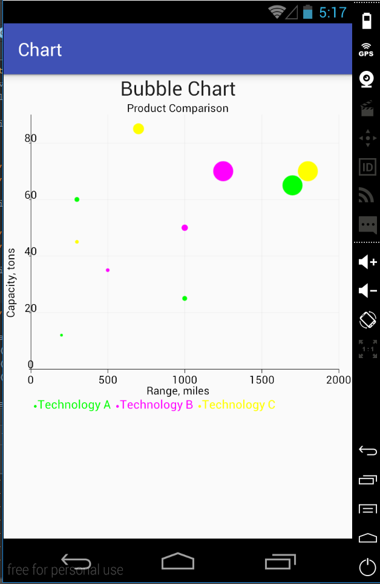

Create a new activity that will display the bubble chart. For that, create two new files: activity_bubble.xml and BubbleActivity.java. Include the new activity into the AndroidManifest.xml file:
<activity android:name=".BubbleActivity" />The activity_bubble.xml is the same as for the line chart.
The BubbleActivity.java will have the following code:
public class BubbleActivity extends AppCompatActivity {
@Override
protected void onCreate(Bundle savedInstanceState) {
super.onCreate(savedInstanceState);
setContentView(R.layout.activity_bubble);
XYValueSeries seriesA = new XYValueSeries("Technology A");
seriesA.add(200d, 12d, 1);
seriesA.add(300d, 60d, 3);
seriesA.add(1000d, 25d, 3);
seriesA.add(1700d, 65d, 18);
XYValueSeries seriesB = new XYValueSeries("Technology B");
seriesB.add(500d, 35d, 2);
seriesB.add(1000d, 50d, 5);
seriesB.add(1250d, 70d, 20);
XYValueSeries seriesC = new XYValueSeries("Technology C");
seriesC.add(300d, 45d, 2);
seriesC.add(700d, 85d, 10);
seriesC.add(1800d, 70d, 20);
XYMultipleSeriesDataset dataset = new XYMultipleSeriesDataset();
dataset.addSeries(seriesA);
dataset.addSeries(seriesB);
dataset.addSeries(seriesC);
XYMultipleSeriesRenderer mRenderer = new XYMultipleSeriesRenderer();
XYSeriesRenderer rendererA = new XYSeriesRenderer();
XYSeriesRenderer rendererB = new XYSeriesRenderer();
XYSeriesRenderer rendererC = new XYSeriesRenderer();
mRenderer.addSeriesRenderer(rendererA);
mRenderer.addSeriesRenderer(rendererB);
mRenderer.addSeriesRenderer(rendererC);
rendererA.setColor(Color.GREEN);
rendererB.setColor(Color.MAGENTA);
rendererC.setColor(Color.YELLOW);
mRenderer.setChartTitle("Product Comparison");
mRenderer.setChartTitleTextSize((float) 24.0);
int[] margins = {30, 60, 50, 30};
mRenderer.setMargins(margins);
double[] range = {0, 2000, 0, 90};
mRenderer.setRange(range);
mRenderer.setMarginsColor(Color.argb(0x00, 0x01, 0x01, 0x01));
mRenderer.setXTitle("Range, miles");
mRenderer.setYTitle("Capacity, tons");
mRenderer.setAxisTitleTextSize((float) 24.0);
mRenderer.setLabelsColor(Color.BLACK);
mRenderer.setLabelsTextSize((float)24.0);
mRenderer.setApplyBackgroundColor(true);
mRenderer.setBackgroundColor(Color.TRANSPARENT);
mRenderer.setShowGrid(true);
mRenderer.setXLabelsColor(Color.BLACK);
mRenderer.setYLabelsColor(0, Color.BLACK);
mRenderer.setXAxisColor(Color.BLACK);
mRenderer.setYAxisColor(Color.BLACK);
mRenderer.setLegendTextSize((float)26.0);
LinearLayout chartContainer = (LinearLayout) findViewById(R.id.bubble_chart_container);
chartContainer.removeAllViews();
GraphicalView chart = ChartFactory.getBubbleChartView(BubbleActivity.this, dataset, mRenderer);
chartContainer.addView(chart);
}
}First, we create three value series for three different technologies and populate them with some data. We should notice that for a bubble chart we use XY value series. This series is an extension of the XY series which adds a third dimension. This dimension is a size of bubbles.
We create a dataset and add series to it:
XYMultipleSeriesDataset dataset = new XYMultipleSeriesDataset();
dataset.addSeries(seriesA);
dataset.addSeries(seriesB);
dataset.addSeries(seriesC);We create a multiple series renderer and a renderer for each series. Next, we add series renderers to the multiple series renderer:
XYMultipleSeriesRenderer mRenderer = new XYMultipleSeriesRenderer();
XYSeriesRenderer rendererA = new XYSeriesRenderer();
XYSeriesRenderer rendererB = new XYSeriesRenderer();
XYSeriesRenderer rendererC = new XYSeriesRenderer();
mRenderer.addSeriesRenderer(rendererA);
mRenderer.addSeriesRenderer(rendererB);
mRenderer.addSeriesRenderer(rendererC);After that we perform some customization. It is almost the same as we have done already. Additionally, we set the range for axes:
double[] range = {0, 2000, 0, 90};
mRenderer.setRange(range);Finally,we find by id the linear layout we have created as a container for a bubble chart LinearLayout chartContainer = (LinearLayout) findViewById(R.id.bubble_chart_container);. We create the view that encapsulates the bubble chart GraphicalView chart = ChartFactory.getBubbleChartView(BubbleActivity.this, dataset, mRenderer); and add it to the linear layout chartContainer.addView(chart);.
The bubble chart that was created: 
In the last section, we create a combined chart.